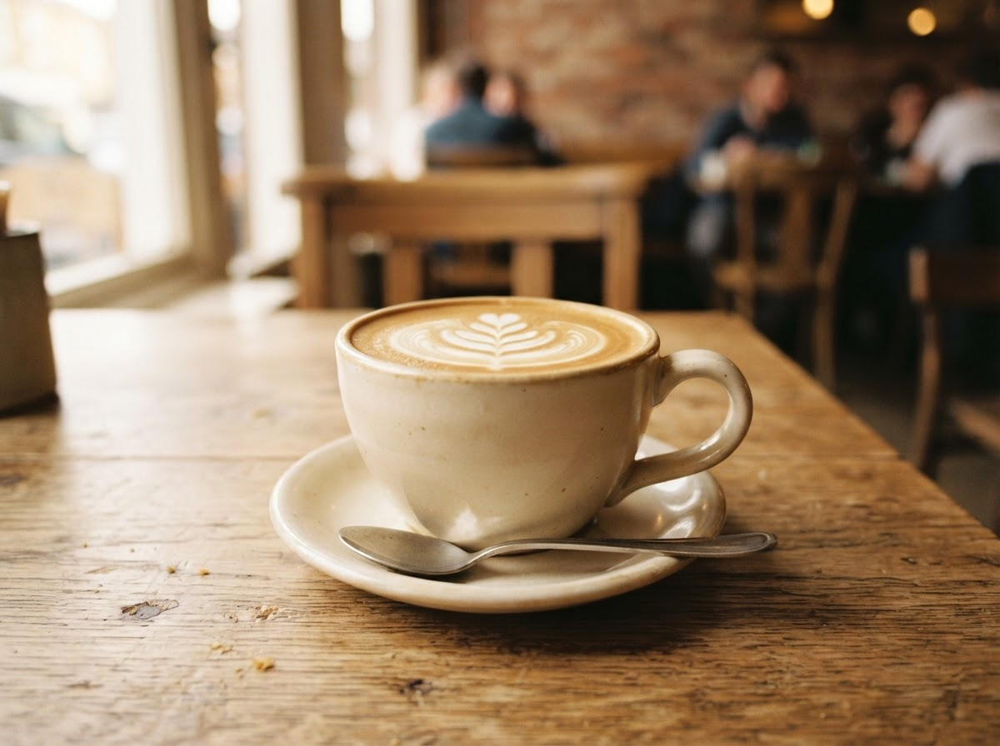
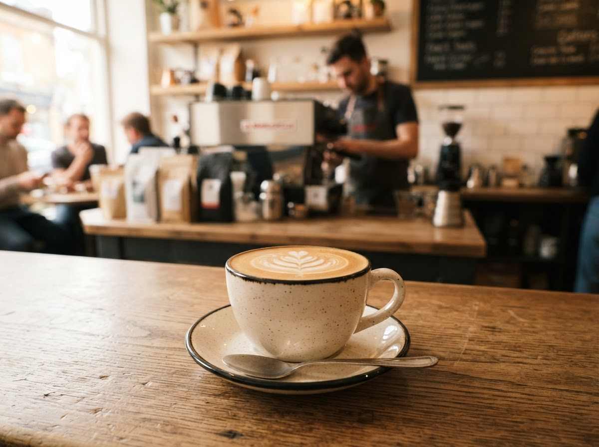
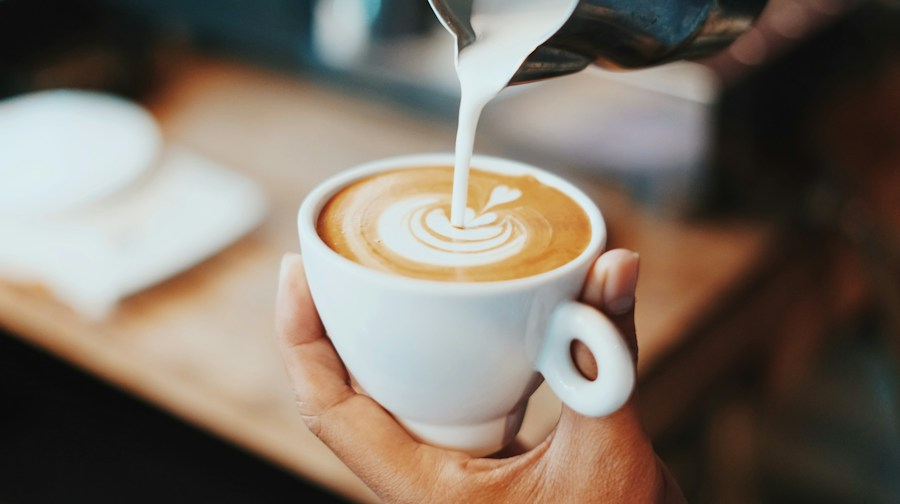
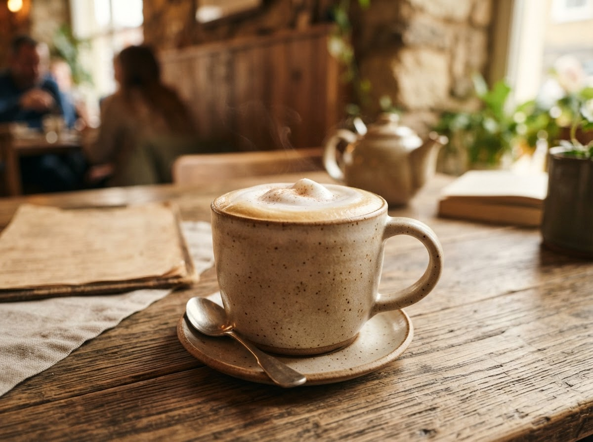
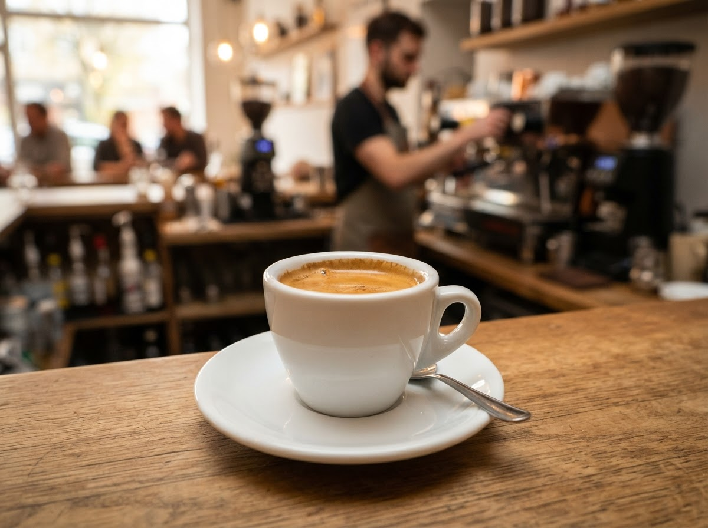
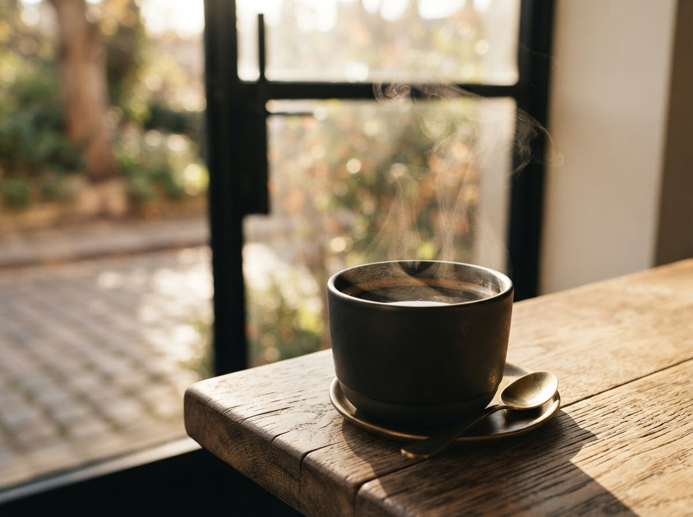
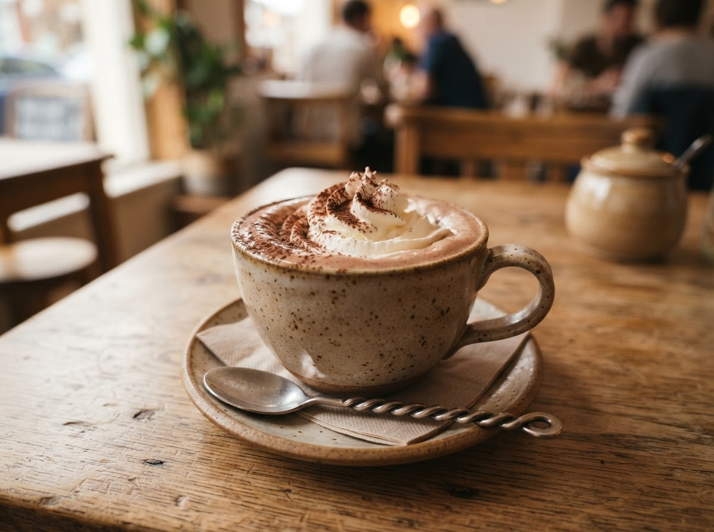
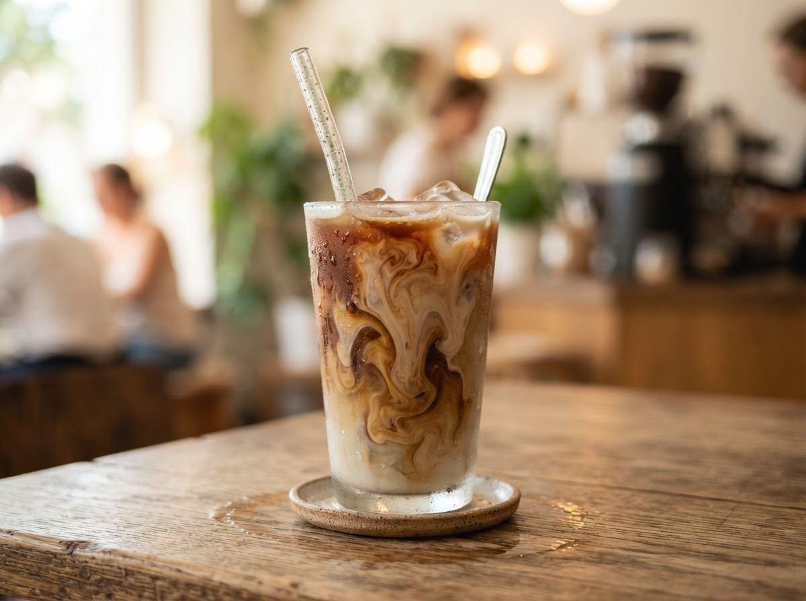

Кофейная карта
Наше меню
Каждый напиток — маленькая история вкуса, бережно созданная
нашими бариста.
Кофе
Чай
Десерты

Латте
520 ₽Классический нежный кофейный напиток с тёплым, мягким вкусом и бархатистой молочной текстурой.

Флэт уайт
550 ₽Яркий, бодрящий напиток на основе двойного ристретто с добавлением деликатного слоя горячего молока.

Раф кофе
600 ₽Сливочный воздушный десертный напиток, взбитый с добавлением натурального ванильного сахара.

Эспрессо
350 ₽Концентрированный плотный шот с ярким балансом сладости и кислотности, плотным телом и долгим послевкусием.

Американо
400 ₽Классический эспрессо, разбавленный горячей очищенной водой для мягкого и чистого раскрытия вкуса.

Мокко
580 ₽Согревающий союз свежего эспрессо, натурального бельгийского шоколада, нежного молока.

Айс латте
550 ₽Прекрасно освежающий холодный кофе с добавлением молока, поданный на кубиках льда.
Зерно домой
Понравился кофе? Возьмите пачку свежей обжарки с собой
Мы с радостью поможем подобрать сорт под ваш любимый способ заваривания и бесплатно помелем зерна прямо у нас на баре.